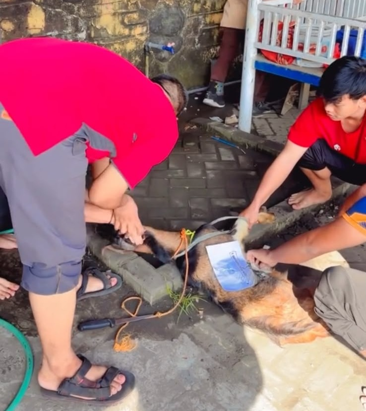

Belajar Makna Kurban dan Kepedulian
Sabtu, 30 Mei 2026
Dalam rangka memperingati Hari Raya Idul Adha, SDN Kebonagung 1 Sukodono melaksanakan kegiatan perayaan Idul Adha pada Sabtu, 30 Mei 2026. Kegiatan ini menjadi momentum bagi seluruh warga sekolah untuk meningkatkan keimanan, kepedulian, kebersamaan, serta memahami nilai-nilai yang terkandung dalam ibadah kurban.

Kegiatan penyembelihan hewan kurban di SDN Kebonagung 1
Penyembelihan Hewan Kurban
Salah satu rangkaian utama kegiatan adalah pelaksanaan penyembelihan hewan kurban. Kegiatan tersebut dilaksanakan dengan tertib dan penuh khidmat. Para siswa mendapatkan kesempatan untuk melihat serta belajar secara langsung mengenai pelaksanaan ibadah kurban sesuai dengan tuntunan agama Islam.
Melalui kegiatan ini, siswa tidak hanya memperoleh pengetahuan secara teori, tetapi juga belajar tentang nilai keikhlasan, berbagi, kepedulian, gotong royong, dan rasa syukur kepada Allah SWT.

Siswa mengikuti kegiatan pembelajaran tentang hikmah kurban
Penjelasan Hikmah Kurban
Selain penyembelihan hewan kurban, kegiatan juga diisi dengan penjelasan mengenai hikmah dan makna ibadah kurban. Siswa diajak memahami bahwa kurban bukan hanya tentang menyembelih hewan, tetapi merupakan bentuk ketaatan dan pengorbanan kepada Allah SWT.
🤲 Meningkatkan Ketakwaan
Mengajarkan pentingnya menjalankan perintah Allah SWT dengan penuh keikhlasan.
❤️ Peduli Sesama
Menumbuhkan kepedulian dengan berbagi kepada sesama yang membutuhkan.
🤝 Kebersamaan
Membentuk sikap gotong royong dan mempererat hubungan antarwarga sekolah.
🌙 Belajar Keikhlasan
Mengajarkan siswa untuk rela berbagi dan berkorban dengan ikhlas.
Perayaan Hari Raya Idul Adha di SDN Kebonagung 1 diharapkan dapat menjadi sarana pembelajaran yang bermakna bagi siswa. Melalui kegiatan tersebut, siswa diharapkan mampu menerapkan nilai-nilai keteladanan dalam kehidupan sehari-hari, seperti berbagi, peduli kepada sesama, bekerja sama, bersyukur, serta melaksanakan kebaikan dengan penuh keikhlasan.
"Semangat Berkurban, Berbagi, dan Peduli Sesama"
SDN Kebonagung 1 Sukodono
Bersama membangun generasi beriman, berkarakter, dan berprestasi